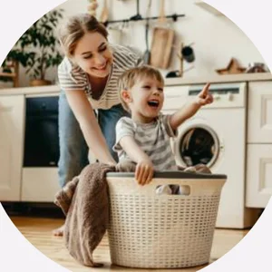

Persona · built from parent survey dataAmy
- Age
- 42
- Occupation
- Stay-at-home parent
- Family
- Married, 3 kids
- Lives in
- Suburban neighbourhood
- Tech literacy
- Medium
“With three kids, I just need to know what's most dangerous right now, and fix it fast.”
Amy spends most of her day managing the home and caring for three children at very different developmental stages, constantly juggling supervision, chores and routines.
YoungestPuts small objects in their mouth
OldestReaches tools and kitchen items on their own
SoOne lock setting can't fit all three
Core needs
- A secure, child-friendly home
- Fewer accidents around the house
- Stay on top of hazards without stress
- Control the child locks remotely
Frustrations
- Can't monitor everything at once
- Little time or energy to research safety
- Needs safety steps she can do fast
- No way to act remotely in an emergency